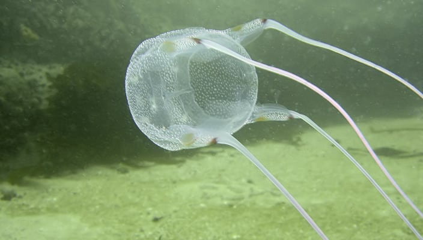
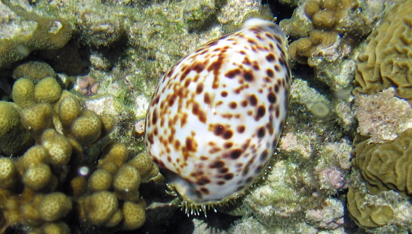
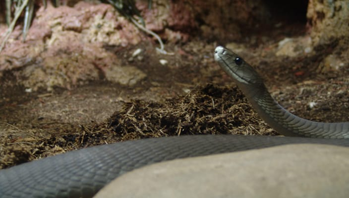
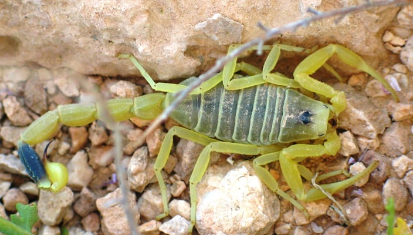
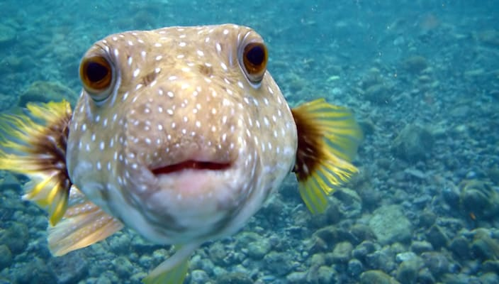
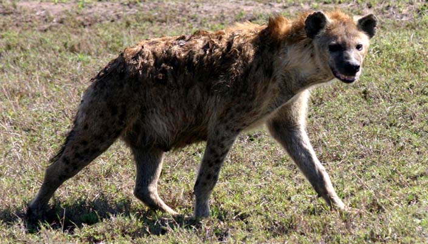
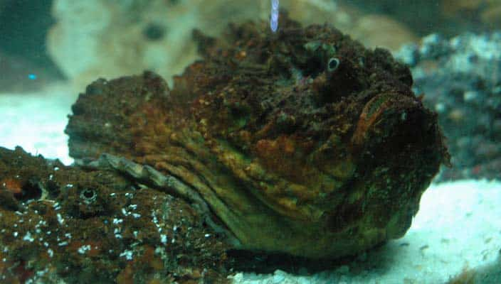
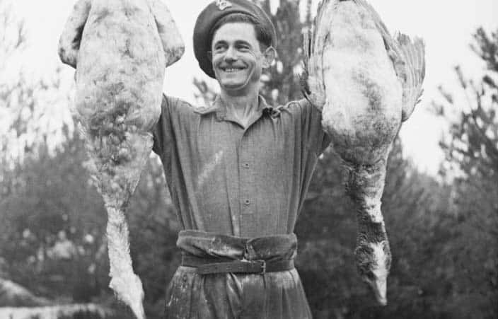

- Dreamy
- Simple
WILD ANIMALS
1. BOX JELLYFISH

There are number of species of box jellyfish,but they are all quite dangerous.
The sea was box jellyfish is prerhaps most deadly variety.This translucent
sea-dweller may not look all that manacing,but it is the most venomous animal
on planet earth. Box jellyfish are deadly to many diffrent animals,not the least
of all us.If you get stung by one of these animals,you are very likely to die.
Even if you do not,you will be tremdous pain for some time of terward.
2. CONE SNAIL

Another ocean dweller to be wary of is the cone snail.It may not look like much,
and you may easily mistake it for any other snail on the beach,but it is extremly
deadly.Just one drop of its venom can kill twenty human adults.There is no antivenin
which means that if you are stung,you will allmost certainly be dead with in minutes.
3. BLACK MAMBA

This snake may look less fearsome than the hooded cobra,but it arguably more dangerous.
It can strike very qiukly and can also chase its victims at an increble speed.
It chooses to do quite often without any provocation.
4. CAPE BUFFALO

This is a particular aggressive inhabitant of the african grasslands.Cape buffalo
have been known to charge victims without provocation,rather like the black mamba.
While they are obviously not venomous,they do have an asset the mamba does not-2,000
pounds of weight and the ability to charge at 40 miles an hour.These creatures will
coninue charging even if they are shot in the heart,and have no reservations about
charging vehicles.They've also been known to attack predators like lions.
5. SIAFU ANTS

These ants are also known as driver ants. They come in swarms of up to 50,000,000,and
will react as if they are a single entity if even one driver ant is in danger.Crush
one of these little critters underfoot while you are out on a walk and you will regret
it as the other 50 million come swarming after you.the ones that latch on will be very hard
to remove.Their jaws will remain clamped into your flesh even if you tear their bodies in half.
While they may not be the most deadly critters on this list,they are certainly impressively
dangerous for their size. They routinely take down and kill much larger things.Look up"ant attack"
and you will find many photos of this phenomenon.
6. DEATHSTALKER SCORPION

This diminutive scorpion may not look all that impressive, but it is responsible for roughly three
fourths of all deaths resulting from scorpions every year.Children are particularly susceptible to these
bites and are moere likely to die from them than adults. The bite is very painful,so even survive,you may
wish you had not for a while.
7. PUFFER FISH

This one of the most deadly animals inhabiting the ocean.They are deceptively cute,but quite dangerous
When threatened,they puff out their protruding spines.The venom from their spines can paralyze you,causing
you to step breathing,resulting in death.for that matter,if you eat improperly prepared puffer fish,you
can also die.
8. HYENA

The hyena is genrally a scavenger,but it can also hunt prey if it wants to.During times of high human
death toll(war,for example),it can develop a taste for human flesh. if corpses are not plentiful enough,
it has been known to take to hunting,and will deliberately pursue human quarry to satisfy its hunger.
9. STONE FISH

These fish are dangrous not only because they are the most venomous fish on the planet,but also
because they are incredibly fast and also very hard to see.They are camouflaged naturally to blend
in with the ocean floor. While hey are only aggressive toward their prey,it is easy to make the mistake
of stepping on one.The venom from the spines can cost you a limb or even kill you.
10. HUMANS

Human being may not stand to win in a fair fight against most of these species,but thanks to our
ingenuity,we have learned how to arm ourselves with weapons and tools which have placed us at
the top of the food chain(at least for the time being). We also get extra points on the deadly scale
for our aggression,not only toward other animals,but toward each other.The scale to which we take our
destruction in unique.No other animal starts worldwide wars or blasts whole regions of the earth into
total ruin with nuclear weapons.Without a doubt,the most dangerous animals in the world is the face you
see in the mirror each day.
about us privacy contact us
Yogesh Copyright © 2016.Copyright
reserved by wild animals.